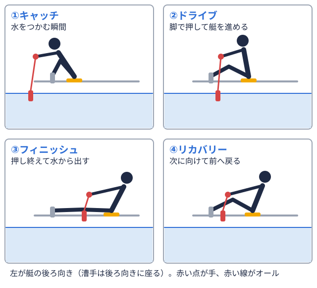

キャリア 2026-11-06
ボート部（漕艇部）出身者はなぜ「プレッシャーへの強さ・逆境対応力」で評価される？接戦のレース展開をキャリアでどう語るか
大学ボート部（漕艇部）の出身者について、「プレッシャーのかかる場面でも冷静に判断できる」「逆境に強い」という評価を社会人になってから受けたという声を耳にすることがあります。ボートは2000mという限られた距離の中で順位が大きく入れ替わる競技であり、レースの数分間に、劣勢をどう立て直すか、優勢をどう守り切るかという判断を繰り返す場面が多い部活動です。本記事では、ボート競技のレース展開からどのようにプレッシャーへの強さ・逆境対応力が育まれるのか、またその経験を仕事の場面でどう伝えればよいのかをまとめます。
ボート部が「逆境対応力の実践の場」と言われる理由
数分間のレースの中で順位が入れ替わる競技特性
公益社団法人日本ローイング協会（JARA）の競漕規則では、全日本大学選手権（インカレ）をはじめとする主要な大会は2000mで実施されると定められています（出典は記事末尾）。2000mは、男子エイト漕ぐ人8人と舵を取る人1人が乗る最大級の艇。1人1本のオールを持つ。  であればおよそ6分弱で漕ぎ切る距離であり、スタートからフィニッシュ漕ぎの終わりの局面。水を押し終えてオールが水面から出る直後。ゴールの意味でも使う。
であればおよそ6分弱で漕ぎ切る距離であり、スタートからフィニッシュ漕ぎの終わりの局面。水を押し終えてオールが水面から出る直後。ゴールの意味でも使う。
劣勢からの立て直しと優勢の維持、両方の経験をする
大学の公式記事で紹介されているレース展開を見ても、スタートで出足が遅れても慌てずにポジションを維持し、中盤で艇速を上げて逆転を狙う進め方や、反対に早い段階でトップに立ち、終盤に向けて早めにスパートをかけて差を守り切る進め方など、クルーによって異なる戦い方が取られています。立命館大学ボート部の公式記事でも、スタートから先行したクルーが1500m地点で早めのスパートに入り優勝した例や、中盤で舵手艇に乗って舵を操作し、漕ぐ人に声で指示を出す人。自分ではオールを持たない。がコールを入れて艇速を上げる作戦が紹介されており、劣勢をどう立て直すか、優勢をどう逃げ切るかという判断を、チームとしてレースの最中に下していることがうかがえます。
修正の指示を出すのも受けるのも仲間であること
ボートはクルー全員で同じ動きを合わせる競技のため、レース中にペースを乱すきっかけがあっても、個人の判断だけで立て直すことはできません。多くのクルーでは舵手（コックス）や漕手オールを持って艇を前に進める選手。舵を取るだけの人は含めない。がコールを出し、仲間の状態を感じながら艇全体でリズムを合わせ直します。プレッシャーのかかる局面で自分だけが動揺しないことに加えて、チーム全体が同じ方向を向き直せるように声をかけ合う経験は、個人競技にはない負荷管理の形といえます。
逆境対応力が仕事の場面で活きる点
想定どおりに進まない状況で動揺せず対応する姿勢
仕事においても、計画どおりに進まないトラブルや、想定していなかった状況に直面する場面は少なくありません。レース中に出足が遅れても、残りの距離で何ができるかを切り替えて考えてきた経験は、こうした場面で感情的にならずに次の一手を考える姿勢につながりやすい力です。全国の大学がどのような大会成績を残してきたかは大学別ページで確認でき、接戦を勝ち抜いてきた大学の歩みを振り返る手がかりになります。
優勢な状況でも気を抜かずに守り切る粘り強さ
逆境対応力は、劣勢を立て直す場面だけでなく、優勢な状況を最後まで守り切る場面でも発揮されます。仕事においても、プロジェクトが順調に進んでいるときほど些細な見落としが起きやすいものです。終盤まで気を抜かずに取り組む姿勢は、優勢を守り切った経験を持つ人が伝えやすい強みの一つです。年度ごとの大会結果は2025年度の全日本大学ローイング選手権結果で確認できます。
チームで状況を立て直す経験
個人の判断だけでなく、仲間と声をかけ合いながら状況を立て直してきた経験は、職場でチームが行き詰まったときに周囲と協力して軌道修正する姿勢にもつながります。マネジメントの観点から振り返りたい場合は、コックス・キャプテン経験に見るマネジメント適性も参考になります。
プレッシャーへの強さ・逆境対応力としてアピールする際のポイント
「諦めなかった」ではなく具体的な判断を説明する
「苦しい場面でも諦めずに頑張りました」という表現だけでは、何を考えどう動いたのかが伝わりにくくなります。劣勢や優勢のどちらの場面だったのか、その中で何を基準にどう判断したのかを具体的に振り返って説明することで、再現性のある力として伝わりやすくなります。就活面接での深掘りへの答え方は、ボート部出身者の就活面接対策でも紹介しています。
結果だけでなく局面ごとの判断を分けて語る
レースの結果（勝った・負けた）だけを語るのではなく、序盤・中盤・終盤でそれぞれどのような判断をしたのかを分けて説明すると、プレッシャーの中での対応力がより具体的に伝わります。数値で自分の立ち位置を把握してきた経験から語りたい場合は、エルゴ・2000mタイムの記録習慣をキャリアで語るも参考になります。
競技以外の場面での対応経験もあわせて伝える
プレッシャーへの強さ・逆境対応力は、競技を離れた場面での振る舞いでも説得力が変わります。学業や就職活動など、他の場面でも想定外の事態にどう対応してきたかまで伝えられると、競技経験に限定されない持続的な強みとして評価されやすくなります。ボート部出身者のキャリア全体の考え方は、ボート部出身者のキャリアで整理しています。
まとめ
大学ボート部（漕艇部）は、2000mという短い距離の中で順位が入れ替わる競技特性から、プレッシャーへの強さ・逆境対応力を実践の場として育みやすい部活動です。劣勢を立て直す判断と優勢を守り切る粘り強さの両方を、チームで声をかけ合いながら経験してきたことは、社会人になってからの想定外のトラブル対応にも活かせる土台になります。現役時代の経験を「どの局面で、何を基準に、どう判断したか」という視点で振り返ってみるとよいでしょう。
出典
全日本大学選手権（インカレ）をはじめとする主要な大会が2000mで実施される点については、公益社団法人日本ローイング協会（JARA）公式サイトの競漕規則（競漕規則2024年版）を参照しました。レース距離・時間の目安に関する記述は、東京工業大学の公式記事（ボート部に関する記事）を参照しました。レース展開における戦術の例については、立命館大学の公式記事（スポーツ・文化情報、同id=1037）を参照しました。体育会出身者の評価に関する一般的な記述は、就職・転職支援サービスの公開情報を参考に編集部が構成したものであり、特定の企業・個人による実績を示すものではありません。選手個人の氏名は掲載していません。最新の大会情報は日本ローイング協会公式サイトをご確認ください。
体育会出身の転職・キャリア相談
オフシーズン・引退後に、長期インターンという選択
部活で培った力を実務で試す。16タイプ診断（30秒）で合う企業がわかります。